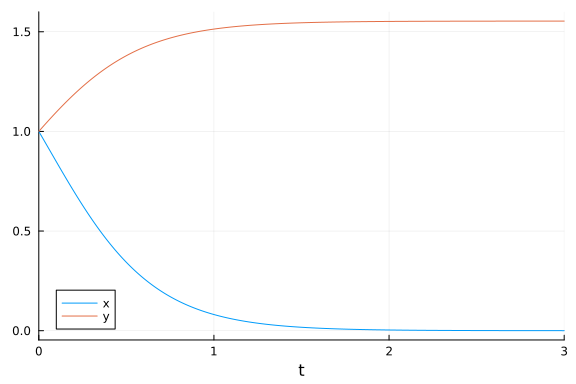

Lotka-Volterra Parameter Estimation Benchmarks
Parameter estimation of Lotka Volterra model using optimisation methods
using ParameterizedFunctions, OrdinaryDiffEq, DiffEqParamEstim
using BlackBoxOptim, NLopt, Plots, RecursiveArrayTools, QuadDIRECT
gr(fmt=:png)Plots.GRBackend()loc_bounds = Tuple{Float64, Float64}[(0, 5), (0, 5), (0, 5), (0, 5)]
glo_bounds = Tuple{Float64, Float64}[(0, 10), (0, 10), (0, 10), (0, 10)]
loc_init = [1,0.5,3.5,1.5]
glo_init = [5,5,5,5]4-element Vector{Int64}:
5
5
5
5f = @ode_def LotkaVolterraTest begin
dx = a*x - b*x*y
dy = -c*y + d*x*y
end a b c d(::Main.##WeaveSandBox#540.LotkaVolterraTest{Main.##WeaveSandBox#540.var"##
#ParameterizedDiffEqFunction#542", Main.##WeaveSandBox#540.var"###Parameter
izedTGradFunction#543", Main.##WeaveSandBox#540.var"###ParameterizedJacobia
nFunction#544", Nothing, Nothing, ModelingToolkit.ODESystem}) (generic func
tion with 1 method)u0 = [1.0,1.0] #initial values
tspan = (0.0,10.0)
p = [1.5,1.0,3.0,1,0] #parameters used, these need to be estimated from the data
tspan = (0.0, 30.0) # sample of 3000 observations over the (0,30) timespan
prob = ODEProblem(f, u0, tspan,p)
tspan2 = (0.0, 3.0) # sample of 3000 observations over the (0,30) timespan
prob_short = ODEProblem(f, u0, tspan2,p)ODEProblem with uType Vector{Float64} and tType Float64. In-place: true
timespan: (0.0, 3.0)
u0: 2-element Vector{Float64}:
1.0
1.0dt = 30.0/3000
tf = 30.0
tinterval = 0:dt:tf
t = collect(tinterval)3001-element Vector{Float64}:
0.0
0.01
0.02
0.03
0.04
0.05
0.06
0.07
0.08
0.09
⋮
29.92
29.93
29.94
29.95
29.96
29.97
29.98
29.99
30.0h = 0.01
M = 300
tstart = 0.0
tstop = tstart + M * h
tinterval_short = 0:h:tstop
t_short = collect(tinterval_short)301-element Vector{Float64}:
0.0
0.01
0.02
0.03
0.04
0.05
0.06
0.07
0.08
0.09
⋮
2.92
2.93
2.94
2.95
2.96
2.97
2.98
2.99
3.0#Generate Data
data_sol_short = solve(prob_short,Tsit5(),saveat=t_short,reltol=1e-9,abstol=1e-9)
data_short = convert(Array, data_sol_short)
data_sol = solve(prob,Tsit5(),saveat=t,reltol=1e-9,abstol=1e-9)
data = convert(Array, data_sol)2×3001 Matrix{Float64}:
1.0 1.00511 1.01045 1.01601 1.02179 … 1.07814 1.08595 1.0939
8
1.0 0.980224 0.960888 0.941986 0.923508 0.785597 0.770673 0.7560
92Plot of the solution
Short Solution
p1 = plot(data_sol_short)
Longer Solution
p2 = plot(data_sol)
Local Solution from the short data set
obj_short = build_loss_objective(prob_short,Tsit5(),L2Loss(t_short,data_short),tstops=t_short)
res1 = bboptimize(obj_short;SearchRange = glo_bounds, MaxSteps = 7e3)
# Lower tolerance could lead to smaller fitness (more accuracy)Starting optimization with optimizer BlackBoxOptim.DiffEvoOpt{BlackBoxOptim
.FitPopulation{Float64}, BlackBoxOptim.RadiusLimitedSelector, BlackBoxOptim
.AdaptiveDiffEvoRandBin{3}, BlackBoxOptim.RandomBound{BlackBoxOptim.Continu
ousRectSearchSpace}}
0.00 secs, 0 evals, 0 steps
0.50 secs, 3511 evals, 3357 steps, improv/step: 0.192 (last = 0.1921), fitn
ess=8.384815355
Optimization stopped after 7001 steps and 0.98 seconds
Termination reason: Max number of steps (7000) reached
Steps per second = 7170.75
Function evals per second = 7325.41
Improvements/step = 0.18443
Total function evaluations = 7152
Best candidate found: [1.49995, 1.00034, 3.00309, 1.00033]
Fitness: 0.002821896
BlackBoxOptim.OptimizationResults("adaptive_de_rand_1_bin_radiuslimited", "
Max number of steps (7000) reached", 7001, 1.660972656636528e9, 0.976326942
4438477, BlackBoxOptim.ParamsDictChain[BlackBoxOptim.ParamsDictChain[Dict{S
ymbol, Any}(:RngSeed => 443401, :SearchRange => [(0.0, 10.0), (0.0, 10.0),
(0.0, 10.0), (0.0, 10.0)], :MaxSteps => 7000),Dict{Symbol, Any}()],Dict{Sym
bol, Any}(:CallbackInterval => -1.0, :TargetFitness => nothing, :TraceMode
=> :compact, :FitnessScheme => BlackBoxOptim.ScalarFitnessScheme{true}(), :
MinDeltaFitnessTolerance => 1.0e-50, :NumDimensions => :NotSpecified, :Fitn
essTolerance => 1.0e-8, :TraceInterval => 0.5, :MaxStepsWithoutProgress =>
10000, :MaxSteps => 10000…)], 7152, BlackBoxOptim.ScalarFitnessScheme{true}
(), BlackBoxOptim.TopListArchiveOutput{Float64, Vector{Float64}}(0.00282189
5934830182, [1.499947786579456, 1.00033603369971, 3.0030914130670614, 1.000
3292256823428]), BlackBoxOptim.PopulationOptimizerOutput{BlackBoxOptim.FitP
opulation{Float64}}(BlackBoxOptim.FitPopulation{Float64}([1.50392701582084
1.4980860079536518 … 1.501322230643566 1.4991937108736448; 1.00080750118910
53 0.9985468383994349 … 0.9993979513791674 1.000926237795212; 2.97700698385
82476 3.0094032745809427 … 2.9879774598326745 3.0081883149730078; 0.9928976
532619133 1.0028239305361017 … 0.9970863652035826 1.0013878644205607], NaN,
[0.01693675178462953, 0.004834198431954002, 0.019585944561206204, 0.005075
209653092888, 0.011533325963018584, 0.006094522984706664, 0.007194823114394
505, 0.01612651978651984, 0.05465584497686224, 0.018836051443321743 … 0.0
10710982687976047, 0.0031165021600374123, 0.012499804071949254, 0.013548793
25186456, 0.0073262057227331265, 0.002821895934830182, 0.01937271096988063,
0.012141586812629812, 0.008582349743520082, 0.0117933440736618], 0, BlackB
oxOptim.Candidate{Float64}[BlackBoxOptim.Candidate{Float64}([1.496346790897
2954, 0.9974692305573334, 3.021350323625458, 1.0051790330982087], 24, 0.040
73282642843208, BlackBoxOptim.AdaptiveDiffEvoRandBin{3}(BlackBoxOptim.Adapt
iveDiffEvoParameters(BlackBoxOptim.BimodalCauchy(Distributions.Cauchy{Float
64}(μ=0.65, σ=0.1), Distributions.Cauchy{Float64}(μ=1.0, σ=0.1), 0.5, false
, true), BlackBoxOptim.BimodalCauchy(Distributions.Cauchy{Float64}(μ=0.1, σ
=0.1), Distributions.Cauchy{Float64}(μ=0.95, σ=0.1), 0.5, false, true), [0.
9372194697025469, 0.980253635637527, 1.0, 0.9013372338904939, 0.67299594098
02737, 1.0, 1.0, 0.8703299059624109, 0.5313175847915479, 1.0 … 0.29396999
603682256, 0.5836150251838671, 1.0, 0.9787547287423748, 0.9271440183071659,
0.6682928367939537, 0.6119387432552912, 1.0, 0.24311643445297892, 0.661872
3133483083], [0.830650860987254, 1.0, 0.7162655188104524, 0.765647530602391
2, 0.21285534830953579, 0.9040777429799423, 0.7414823588133707, 0.180541886
1318756, 0.8545722476158036, 0.9082800034296219 … 0.9421955394144617, 0.5
675802413509103, 1.0, 0.9780816727378588, 0.8167303409901127, 0.41604896826
4518, 0.08834938583309626, 0.3294957590955637, 1.0, 0.40916401218393406])),
0), BlackBoxOptim.Candidate{Float64}([1.4918364284356258, 0.99581256364804
88, 3.0410380254101286, 1.0107318211103347], 24, 0.11830050913524992, Black
BoxOptim.AdaptiveDiffEvoRandBin{3}(BlackBoxOptim.AdaptiveDiffEvoParameters(
BlackBoxOptim.BimodalCauchy(Distributions.Cauchy{Float64}(μ=0.65, σ=0.1), D
istributions.Cauchy{Float64}(μ=1.0, σ=0.1), 0.5, false, true), BlackBoxOpti
m.BimodalCauchy(Distributions.Cauchy{Float64}(μ=0.1, σ=0.1), Distributions.
Cauchy{Float64}(μ=0.95, σ=0.1), 0.5, false, true), [0.9372194697025469, 0.9
80253635637527, 1.0, 0.9013372338904939, 0.6729959409802737, 1.0, 1.0, 0.87
03299059624109, 0.5313175847915479, 1.0 … 0.29396999603682256, 0.58361502
51838671, 1.0, 0.9787547287423748, 0.9271440183071659, 0.6682928367939537,
0.6119387432552912, 1.0, 0.24311643445297892, 0.6618723133483083], [0.83065
0860987254, 1.0, 0.7162655188104524, 0.7656475306023912, 0.2128553483095357
9, 0.9040777429799423, 0.7414823588133707, 0.1805418861318756, 0.8545722476
158036, 0.9082800034296219 … 0.9421955394144617, 0.5675802413509103, 1.0,
0.9780816727378588, 0.8167303409901127, 0.416048968264518, 0.0883493858330
9626, 0.3294957590955637, 1.0, 0.40916401218393406])), 0)], Base.Threads.Sp
inLock(0))))obj_short = build_loss_objective(prob_short,Tsit5(),L2Loss(t_short,data_short),tstops=t_short,reltol=1e-9)
res1 = bboptimize(obj_short;SearchRange = glo_bounds, MaxSteps = 7e3)
# Change in tolerance makes it worseStarting optimization with optimizer BlackBoxOptim.DiffEvoOpt{BlackBoxOptim
.FitPopulation{Float64}, BlackBoxOptim.RadiusLimitedSelector, BlackBoxOptim
.AdaptiveDiffEvoRandBin{3}, BlackBoxOptim.RandomBound{BlackBoxOptim.Continu
ousRectSearchSpace}}
0.00 secs, 0 evals, 0 steps
0.50 secs, 3466 evals, 3377 steps, improv/step: 0.157 (last = 0.1566), fitn
ess=17.532698308
Optimization stopped after 7001 steps and 0.98 seconds
Termination reason: Max number of steps (7000) reached
Steps per second = 7172.07
Function evals per second = 7263.24
Improvements/step = 0.16529
Total function evaluations = 7090
Best candidate found: [1.50095, 1.00059, 2.99613, 0.998503]
Fitness: 0.001084880
BlackBoxOptim.OptimizationResults("adaptive_de_rand_1_bin_radiuslimited", "
Max number of steps (7000) reached", 7001, 1.660972658766425e9, 0.976148128
5095215, BlackBoxOptim.ParamsDictChain[BlackBoxOptim.ParamsDictChain[Dict{S
ymbol, Any}(:RngSeed => 129056, :SearchRange => [(0.0, 10.0), (0.0, 10.0),
(0.0, 10.0), (0.0, 10.0)], :MaxSteps => 7000),Dict{Symbol, Any}()],Dict{Sym
bol, Any}(:CallbackInterval => -1.0, :TargetFitness => nothing, :TraceMode
=> :compact, :FitnessScheme => BlackBoxOptim.ScalarFitnessScheme{true}(), :
MinDeltaFitnessTolerance => 1.0e-50, :NumDimensions => :NotSpecified, :Fitn
essTolerance => 1.0e-8, :TraceInterval => 0.5, :MaxStepsWithoutProgress =>
10000, :MaxSteps => 10000…)], 7090, BlackBoxOptim.ScalarFitnessScheme{true}
(), BlackBoxOptim.TopListArchiveOutput{Float64, Vector{Float64}}(0.00108488
03055899226, [1.5009480968642808, 1.00058515983419, 2.9961301336549684, 0.9
9850282415145]), BlackBoxOptim.PopulationOptimizerOutput{BlackBoxOptim.FitP
opulation{Float64}}(BlackBoxOptim.FitPopulation{Float64}([1.495197033650531
8 1.5040337390019198 … 1.4998236623633656 1.5131188318483015; 0.99815116800
51874 1.0175103301413269 … 1.0072307211900602 1.004051512660055; 3.01948586
60124204 3.0219557517411793 … 3.0105432272156682 2.966748218842608; 1.00602
49755377595 0.99967814107681 … 1.0027875622661848 0.9811270234997327], NaN,
[0.026153048443131016, 0.512415817230831, 0.3315910720288781, 0.1877561116
3860564, 0.08392559804799651, 0.05713236292806611, 0.0955173610195284, 0.01
0640819574993837, 0.018084684587812955, 0.010744304170112098 … 0.17373644
3514034, 0.012287884560888435, 0.02280173764881224, 0.1167797025930137, 0.0
4769065830686379, 0.12362039424824774, 0.1926342477530623, 0.44586340786826
584, 0.08528310942163425, 0.6005236653590271], 0, BlackBoxOptim.Candidate{F
loat64}[BlackBoxOptim.Candidate{Float64}([1.5013735563138402, 1.00089305834
85498, 2.9943076266269597, 0.9979970293168762], 22, 0.001560511713833931, B
lackBoxOptim.AdaptiveDiffEvoRandBin{3}(BlackBoxOptim.AdaptiveDiffEvoParamet
ers(BlackBoxOptim.BimodalCauchy(Distributions.Cauchy{Float64}(μ=0.65, σ=0.1
), Distributions.Cauchy{Float64}(μ=1.0, σ=0.1), 0.5, false, true), BlackBox
Optim.BimodalCauchy(Distributions.Cauchy{Float64}(μ=0.1, σ=0.1), Distributi
ons.Cauchy{Float64}(μ=0.95, σ=0.1), 0.5, false, true), [0.8910433067124155,
1.0, 0.9470538307860427, 0.6473690476950786, 0.8131809204245586, 1.0, 0.59
51660765009613, 0.9710693104694543, 1.0, 1.0 … 0.9644693745302859, 0.5505
08174949252, 0.9731369395885521, 0.6165501867397792, 0.9832571015932206, 1.
0, 0.8030950133392156, 1.0, 0.6917070400065572, 0.12244900496586708], [0.73
97811446329486, 0.013242553435669532, 1.0, 0.9966024497727957, 0.9233763944
759626, 0.0517361916639415, 1.0, 1.0, 1.0, 0.04415101767511734 … 0.229843
20112411702, 0.13476189182067133, 0.9817890843717176, 0.9598294160202878, 1
.0, 0.1936873621616899, 1.0, 0.08597617600969668, 0.07106277108645766, 1.0]
)), 0), BlackBoxOptim.Candidate{Float64}([1.498963590374539, 1.002593645787
563, 3.01512173935019, 1.0034485193743703], 22, 0.020309428040548135, Black
BoxOptim.AdaptiveDiffEvoRandBin{3}(BlackBoxOptim.AdaptiveDiffEvoParameters(
BlackBoxOptim.BimodalCauchy(Distributions.Cauchy{Float64}(μ=0.65, σ=0.1), D
istributions.Cauchy{Float64}(μ=1.0, σ=0.1), 0.5, false, true), BlackBoxOpti
m.BimodalCauchy(Distributions.Cauchy{Float64}(μ=0.1, σ=0.1), Distributions.
Cauchy{Float64}(μ=0.95, σ=0.1), 0.5, false, true), [0.8910433067124155, 1.0
, 0.9470538307860427, 0.6473690476950786, 0.8131809204245586, 1.0, 0.595166
0765009613, 0.9710693104694543, 1.0, 1.0 … 0.9644693745302859, 0.55050817
4949252, 0.9731369395885521, 0.6165501867397792, 0.9832571015932206, 1.0, 0
.8030950133392156, 1.0, 0.6917070400065572, 0.12244900496586708], [0.739781
1446329486, 0.013242553435669532, 1.0, 0.9966024497727957, 0.92337639447596
26, 0.0517361916639415, 1.0, 1.0, 1.0, 0.04415101767511734 … 0.2298432011
2411702, 0.13476189182067133, 0.9817890843717176, 0.9598294160202878, 1.0,
0.1936873621616899, 1.0, 0.08597617600969668, 0.07106277108645766, 1.0])),
0)], Base.Threads.SpinLock(0))))obj_short = build_loss_objective(prob_short,Vern9(),L2Loss(t_short,data_short),tstops=t_short,reltol=1e-9,abstol=1e-9)
res1 = bboptimize(obj_short;SearchRange = glo_bounds, MaxSteps = 7e3)
# using the moe accurate Vern9() reduces the fitness marginally and leads to some increase in time takenStarting optimization with optimizer BlackBoxOptim.DiffEvoOpt{BlackBoxOptim
.FitPopulation{Float64}, BlackBoxOptim.RadiusLimitedSelector, BlackBoxOptim
.AdaptiveDiffEvoRandBin{3}, BlackBoxOptim.RandomBound{BlackBoxOptim.Continu
ousRectSearchSpace}}
0.00 secs, 0 evals, 0 steps
0.50 secs, 2560 evals, 2403 steps, improv/step: 0.188 (last = 0.1877), fitn
ess=153.886450384
1.00 secs, 4891 evals, 4734 steps, improv/step: 0.185 (last = 0.1823), fitn
ess=0.228768610
Optimization stopped after 7001 steps and 1.45 seconds
Termination reason: Max number of steps (7000) reached
Steps per second = 4844.10
Function evals per second = 4951.35
Improvements/step = 0.18400
Total function evaluations = 7156
Best candidate found: [1.49954, 0.999999, 3.00466, 1.00099]
Fitness: 0.002189088
BlackBoxOptim.OptimizationResults("adaptive_de_rand_1_bin_radiuslimited", "
Max number of steps (7000) reached", 7001, 1.66097267200776e9, 1.4452619552
612305, BlackBoxOptim.ParamsDictChain[BlackBoxOptim.ParamsDictChain[Dict{Sy
mbol, Any}(:RngSeed => 632801, :SearchRange => [(0.0, 10.0), (0.0, 10.0), (
0.0, 10.0), (0.0, 10.0)], :MaxSteps => 7000),Dict{Symbol, Any}()],Dict{Symb
ol, Any}(:CallbackInterval => -1.0, :TargetFitness => nothing, :TraceMode =
> :compact, :FitnessScheme => BlackBoxOptim.ScalarFitnessScheme{true}(), :M
inDeltaFitnessTolerance => 1.0e-50, :NumDimensions => :NotSpecified, :Fitne
ssTolerance => 1.0e-8, :TraceInterval => 0.5, :MaxStepsWithoutProgress => 1
0000, :MaxSteps => 10000…)], 7156, BlackBoxOptim.ScalarFitnessScheme{true}(
), BlackBoxOptim.TopListArchiveOutput{Float64, Vector{Float64}}(0.002189088
34367233, [1.4995405942576137, 0.9999994014869104, 3.0046587706953334, 1.00
09941534008038]), BlackBoxOptim.PopulationOptimizerOutput{BlackBoxOptim.Fit
Population{Float64}}(BlackBoxOptim.FitPopulation{Float64}([1.49789474586883
1 1.4964918632010569 … 1.4989750702258902 1.4988197789837137; 1.00157803679
86773 0.9958936425362567 … 1.0002248538422203 0.9996082684488292; 3.0182245
256292246 3.008700637971484 … 3.006121476211669 3.005768963578289; 1.004939
1475042353 1.0029947822839864 … 1.0011643481183146 1.001012361776105], NaN,
[0.015801095717274578, 0.02344668548374346, 0.016398193471705375, 0.135833
572702783, 0.010243229391315086, 0.050307013746454785, 0.06392710023067265,
0.05716049389304014, 0.010150046931309435, 0.005750191290133264 … 0.0041
02180819742296, 0.004832981116716701, 0.00218908834367233, 0.00363049214349
85498, 0.007717494247255058, 0.005054526938463218, 0.01421137940195532, 0.0
05198864193341461, 0.007799548004628459, 0.009891016097411023], 0, BlackBox
Optim.Candidate{Float64}[BlackBoxOptim.Candidate{Float64}([1.49989384751219
3, 0.9981295950065924, 3.00449484256831, 0.9993192223304375], 28, 0.0485927
58934176535, BlackBoxOptim.AdaptiveDiffEvoRandBin{3}(BlackBoxOptim.Adaptive
DiffEvoParameters(BlackBoxOptim.BimodalCauchy(Distributions.Cauchy{Float64}
(μ=0.65, σ=0.1), Distributions.Cauchy{Float64}(μ=1.0, σ=0.1), 0.5, false, t
rue), BlackBoxOptim.BimodalCauchy(Distributions.Cauchy{Float64}(μ=0.1, σ=0.
1), Distributions.Cauchy{Float64}(μ=0.95, σ=0.1), 0.5, false, true), [0.927
4002931050657, 0.49609830120679255, 1.0, 0.5487284140132959, 0.660086114907
2317, 0.7778958703662415, 1.0, 1.0, 0.4219838586152559, 0.9330758778905499
… 1.0, 1.0, 1.0, 1.0, 0.47282193790692384, 1.0, 0.5950438473479089, 0.662
4870199615984, 0.2703902314193749, 0.9761926630494269], [0.3239514901778005
6, 0.8372771912738334, 1.0, 1.0, 0.12885905734692846, 0.004611381375857371,
0.10455415635084217, 0.11735858475878698, 0.29356094870974264, 1.0 … 1.0
, 0.8020037025686777, 0.14509045866717127, 0.1076292140386002, 0.9180172761
007038, 0.9563635666548504, 1.0, 0.1571160824904796, 0.8770586616680787, 0.
18131484043202023])), 0), BlackBoxOptim.Candidate{Float64}([1.4998938475121
93, 0.9981295950065924, 3.00449484256831, 0.9979485295348145], 28, 0.119236
71697337178, BlackBoxOptim.AdaptiveDiffEvoRandBin{3}(BlackBoxOptim.Adaptive
DiffEvoParameters(BlackBoxOptim.BimodalCauchy(Distributions.Cauchy{Float64}
(μ=0.65, σ=0.1), Distributions.Cauchy{Float64}(μ=1.0, σ=0.1), 0.5, false, t
rue), BlackBoxOptim.BimodalCauchy(Distributions.Cauchy{Float64}(μ=0.1, σ=0.
1), Distributions.Cauchy{Float64}(μ=0.95, σ=0.1), 0.5, false, true), [0.927
4002931050657, 0.49609830120679255, 1.0, 0.5487284140132959, 0.660086114907
2317, 0.7778958703662415, 1.0, 1.0, 0.4219838586152559, 0.9330758778905499
… 1.0, 1.0, 1.0, 1.0, 0.47282193790692384, 1.0, 0.5950438473479089, 0.662
4870199615984, 0.2703902314193749, 0.9761926630494269], [0.3239514901778005
6, 0.8372771912738334, 1.0, 1.0, 0.12885905734692846, 0.004611381375857371,
0.10455415635084217, 0.11735858475878698, 0.29356094870974264, 1.0 … 1.0
, 0.8020037025686777, 0.14509045866717127, 0.1076292140386002, 0.9180172761
007038, 0.9563635666548504, 1.0, 0.1571160824904796, 0.8770586616680787, 0.
18131484043202023])), 0)], Base.Threads.SpinLock(0))))Using NLopt
Global Optimisation first
obj_short = build_loss_objective(prob_short,Vern9(),L2Loss(t_short,data_short),tstops=t_short,reltol=1e-9,abstol=1e-9)(::DiffEqParamEstim.DiffEqObjective{DiffEqParamEstim.var"#37#42"{Nothing, B
ool, Int64, typeof(DiffEqParamEstim.STANDARD_PROB_GENERATOR), Base.Pairs{Sy
mbol, Any, Tuple{Symbol, Symbol, Symbol}, NamedTuple{(:tstops, :reltol, :ab
stol), Tuple{Vector{Float64}, Float64, Float64}}}, SciMLBase.ODEProblem{Vec
tor{Float64}, Tuple{Float64, Float64}, true, Vector{Float64}, Main.##WeaveS
andBox#540.LotkaVolterraTest{Main.##WeaveSandBox#540.var"###ParameterizedDi
ffEqFunction#542", Main.##WeaveSandBox#540.var"###ParameterizedTGradFunctio
n#543", Main.##WeaveSandBox#540.var"###ParameterizedJacobianFunction#544",
Nothing, Nothing, ModelingToolkit.ODESystem}, Base.Pairs{Symbol, Union{}, T
uple{}, NamedTuple{(), Tuple{}}}, SciMLBase.StandardODEProblem}, OrdinaryDi
ffEq.Vern9, DiffEqParamEstim.L2Loss{Vector{Float64}, Matrix{Float64}, Nothi
ng, Nothing, Nothing}, Nothing, Tuple{}}, DiffEqParamEstim.var"#41#47"{Diff
EqParamEstim.var"#37#42"{Nothing, Bool, Int64, typeof(DiffEqParamEstim.STAN
DARD_PROB_GENERATOR), Base.Pairs{Symbol, Any, Tuple{Symbol, Symbol, Symbol}
, NamedTuple{(:tstops, :reltol, :abstol), Tuple{Vector{Float64}, Float64, F
loat64}}}, SciMLBase.ODEProblem{Vector{Float64}, Tuple{Float64, Float64}, t
rue, Vector{Float64}, Main.##WeaveSandBox#540.LotkaVolterraTest{Main.##Weav
eSandBox#540.var"###ParameterizedDiffEqFunction#542", Main.##WeaveSandBox#5
40.var"###ParameterizedTGradFunction#543", Main.##WeaveSandBox#540.var"###P
arameterizedJacobianFunction#544", Nothing, Nothing, ModelingToolkit.ODESys
tem}, Base.Pairs{Symbol, Union{}, Tuple{}, NamedTuple{(), Tuple{}}}, SciMLB
ase.StandardODEProblem}, OrdinaryDiffEq.Vern9, DiffEqParamEstim.L2Loss{Vect
or{Float64}, Matrix{Float64}, Nothing, Nothing, Nothing}, Nothing, Tuple{}}
}}) (generic function with 2 methods)opt = Opt(:GN_ORIG_DIRECT_L, 4)
lower_bounds!(opt,[0.0,0.0,0.0,0.0])
upper_bounds!(opt,[10.0,10.0,10.0,10.0])
min_objective!(opt, obj_short.cost_function2)
xtol_rel!(opt,1e-12)
maxeval!(opt, 10000)
@time (minf,minx,ret) = NLopt.optimize(opt,glo_init)0.846808 seconds (1.46 M allocations: 218.729 MiB, 4.32% gc time, 5.43% c
ompilation time)
(368.38768828453016, [1.7283950617224937, 2.22222222222419, 3.5802469135861
48, 1.1172077427280471], :XTOL_REACHED)opt = Opt(:GN_CRS2_LM, 4)
lower_bounds!(opt,[0.0,0.0,0.0,0.0])
upper_bounds!(opt,[10.0,10.0,10.0,10.0])
min_objective!(opt, obj_short.cost_function2)
xtol_rel!(opt,1e-12)
maxeval!(opt, 10000)
@time (minf,minx,ret) = NLopt.optimize(opt,glo_init)1.547302 seconds (2.67 M allocations: 411.434 MiB, 4.02% gc time, 1.22% c
ompilation time)
(1.666249622431057e-16, [1.5000000000738065, 1.0000000000878324, 2.99999999
9495079, 0.9999999999201531], :XTOL_REACHED)opt = Opt(:GN_ISRES, 4)
lower_bounds!(opt,[0.0,0.0,0.0,0.0])
upper_bounds!(opt,[10.0,10.0,10.0,10.0])
min_objective!(opt, obj_short.cost_function2)
xtol_rel!(opt,1e-12)
maxeval!(opt, 10000)
@time (minf,minx,ret) = NLopt.optimize(opt,glo_init)2.014667 seconds (3.55 M allocations: 549.775 MiB, 2.48% gc time)
(47.52253501239024, [1.3195860890014324, 0.9558129442504506, 4.188584888854
864, 1.345858917066396], :MAXEVAL_REACHED)opt = Opt(:GN_ESCH, 4)
lower_bounds!(opt,[0.0,0.0,0.0,0.0])
upper_bounds!(opt,[10.0,10.0,10.0,10.0])
min_objective!(opt, obj_short.cost_function2)
xtol_rel!(opt,1e-12)
maxeval!(opt, 10000)
@time (minf,minx,ret) = NLopt.optimize(opt,glo_init)2.025349 seconds (3.55 M allocations: 549.775 MiB, 3.70% gc time)
(298.80217780103936, [1.0516679745166522, 0.8522016401161183, 6.83861063072
8025, 2.4948406082152714], :MAXEVAL_REACHED)Now local optimization algorithms are used to check the global ones, these use the local constraints, different intial values and time step
opt = Opt(:LN_BOBYQA, 4)
lower_bounds!(opt,[0.0,0.0,0.0,0.0])
upper_bounds!(opt,[5.0,5.0,5.0,5.0])
min_objective!(opt, obj_short.cost_function2)
xtol_rel!(opt,1e-12)
maxeval!(opt, 10000)
@time (minf,minx,ret) = NLopt.optimize(opt,loc_init)0.057391 seconds (105.09 k allocations: 16.274 MiB)
(1.6660890469211983e-16, [1.5000000000701783, 1.0000000000848683, 2.9999999
99508725, 0.9999999999254816], :XTOL_REACHED)opt = Opt(:LN_NELDERMEAD, 4)
lower_bounds!(opt,[0.0,0.0,0.0,0.0])
upper_bounds!(opt,[5.0,5.0,5.0,5.0])
min_objective!(opt, obj_short.cost_function2)
xtol_rel!(opt,1e-12)
maxeval!(opt, 10000)
@time (minf,minx,ret) = NLopt.optimize(opt,loc_init)0.094130 seconds (175.03 k allocations: 27.104 MiB)
(1.6660957867719789e-16, [1.5000000000705307, 1.000000000085224, 2.99999999
9507768, 0.9999999999249004], :XTOL_REACHED)opt = Opt(:LD_SLSQP, 4)
lower_bounds!(opt,[0.0,0.0,0.0,0.0])
upper_bounds!(opt,[5.0,5.0,5.0,5.0])
min_objective!(opt, obj_short.cost_function2)
xtol_rel!(opt,1e-12)
maxeval!(opt, 10000)
@time (minf,minx,ret) = NLopt.optimize(opt,loc_init)0.086782 seconds (197.81 k allocations: 20.673 MiB, 40.77% compilation ti
me)
(4.1924030254616304e-16, [1.49999999968272, 1.0000000001713043, 3.000000002
088537, 1.0000000007284056], :XTOL_REACHED)opt = Opt(:LN_COBYLA, 4)
lower_bounds!(opt,[0.0,0.0,0.0,0.0])
upper_bounds!(opt,[5.0,5.0,5.0,5.0])
min_objective!(opt, obj_short.cost_function2)
xtol_rel!(opt,1e-12)
maxeval!(opt, 10000)
@time (minf,minx,ret) = NLopt.optimize(opt,loc_init)2.018377 seconds (3.55 M allocations: 549.775 MiB, 3.28% gc time)
(3.157248243685795e-10, [1.4999993677273118, 0.9999998051716685, 3.00000323
83352533, 1.0000010273869007], :MAXEVAL_REACHED)opt = Opt(:LN_NEWUOA_BOUND, 4)
lower_bounds!(opt,[0.0,0.0,0.0,0.0])
upper_bounds!(opt,[5.0,5.0,5.0,5.0])
min_objective!(opt, obj_short.cost_function2)
xtol_rel!(opt,1e-12)
maxeval!(opt, 10000)
@time (minf,minx,ret) = NLopt.optimize(opt,loc_init)0.216829 seconds (116.45 k allocations: 18.033 MiB)
(5.635259844515077e-8, [1.4999931227683765, 0.9999980542726125, 3.000040914
8441873, 1.000012121130411], :SUCCESS)opt = Opt(:LN_PRAXIS, 4)
lower_bounds!(opt,[0.0,0.0,0.0,0.0])
upper_bounds!(opt,[5.0,5.0,5.0,5.0])
min_objective!(opt, obj_short.cost_function2)
xtol_rel!(opt,1e-12)
maxeval!(opt, 10000)
@time (minf,minx,ret) = NLopt.optimize(opt,loc_init)0.042188 seconds (76.34 k allocations: 11.821 MiB)
(1.6762214188792885e-16, [1.5000000000485803, 1.0000000000940568, 2.9999999
99669082, 0.9999999999708589], :SUCCESS)opt = Opt(:LN_SBPLX, 4)
lower_bounds!(opt,[0.0,0.0,0.0,0.0])
upper_bounds!(opt,[5.0,5.0,5.0,5.0])
min_objective!(opt, obj_short.cost_function2)
xtol_rel!(opt,1e-12)
maxeval!(opt, 10000)
@time (minf,minx,ret) = NLopt.optimize(opt,loc_init)2.032160 seconds (3.55 M allocations: 549.775 MiB, 3.98% gc time)
(3.857624297050259e-12, [1.4999999301104459, 0.9999999814386067, 3.00000035
3466034, 1.0000001103210938], :MAXEVAL_REACHED)opt = Opt(:LD_MMA, 4)
lower_bounds!(opt,[0.0,0.0,0.0,0.0])
upper_bounds!(opt,[5.0,5.0,5.0,5.0])
min_objective!(opt, obj_short.cost_function2)
xtol_rel!(opt,1e-12)
maxeval!(opt, 10000)
@time (minf,minx,ret) = NLopt.optimize(opt,loc_init)3.957509 seconds (6.99 M allocations: 1.064 GiB, 2.50% gc time)
(5.610312517353103e-15, [1.4999999975365919, 0.9999999994489353, 3.00000001
30784534, 1.0000000041695274], :XTOL_REACHED)opt = Opt(:LD_TNEWTON_PRECOND_RESTART, 4)
lower_bounds!(opt,[0.0,0.0,0.0,0.0])
upper_bounds!(opt,[5.0,5.0,5.0,5.0])
min_objective!(opt, obj_short.cost_function2)
xtol_rel!(opt,1e-12)
maxeval!(opt, 10000)
@time (minf,minx,ret) = NLopt.optimize(opt,loc_init)0.070449 seconds (126.93 k allocations: 19.770 MiB)
(4.192485821932026e-16, [1.4999999996826925, 1.0000000001712839, 3.00000000
2088644, 1.0000000007284402], :SUCCESS)Now the longer problem is solved for a global solution
Vern9 solver with reltol=1e-9 and abstol=1e-9 is used and the dataset is increased to 3000 observations per variable with the same integration time step of 0.01.
obj = build_loss_objective(prob,Vern9(),L2Loss(t,data),tstops=t,reltol=1e-9,abstol=1e-9)
res1 = bboptimize(obj;SearchRange = glo_bounds, MaxSteps = 4e3)Starting optimization with optimizer BlackBoxOptim.DiffEvoOpt{BlackBoxOptim
.FitPopulation{Float64}, BlackBoxOptim.RadiusLimitedSelector, BlackBoxOptim
.AdaptiveDiffEvoRandBin{3}, BlackBoxOptim.RandomBound{BlackBoxOptim.Continu
ousRectSearchSpace}}
0.00 secs, 0 evals, 0 steps
0.50 secs, 242 evals, 170 steps, improv/step: 0.412 (last = 0.4118), fitnes
s=24005.140821845
1.00 secs, 493 evals, 406 steps, improv/step: 0.318 (last = 0.2500), fitnes
s=23912.442536756
1.50 secs, 733 evals, 638 steps, improv/step: 0.287 (last = 0.2328), fitnes
s=23814.717296630
2.00 secs, 986 evals, 886 steps, improv/step: 0.256 (last = 0.1774), fitnes
s=22704.329777387
2.52 secs, 1234 evals, 1133 steps, improv/step: 0.229 (last = 0.1336), fitn
ess=21683.089359034
3.02 secs, 1489 evals, 1388 steps, improv/step: 0.207 (last = 0.1059), fitn
ess=20265.520673419
3.52 secs, 1742 evals, 1641 steps, improv/step: 0.188 (last = 0.0870), fitn
ess=12725.539524199
4.02 secs, 1985 evals, 1884 steps, improv/step: 0.176 (last = 0.0947), fitn
ess=8509.516862301
4.52 secs, 2238 evals, 2137 steps, improv/step: 0.165 (last = 0.0791), fitn
ess=8509.516862301
5.02 secs, 2480 evals, 2379 steps, improv/step: 0.155 (last = 0.0661), fitn
ess=8509.516862301
5.53 secs, 2733 evals, 2632 steps, improv/step: 0.147 (last = 0.0751), fitn
ess=8509.516862301
6.03 secs, 2974 evals, 2873 steps, improv/step: 0.140 (last = 0.0664), fitn
ess=8509.516862301
6.53 secs, 3229 evals, 3128 steps, improv/step: 0.132 (last = 0.0431), fitn
ess=8509.516862301
7.03 secs, 3482 evals, 3381 steps, improv/step: 0.127 (last = 0.0593), fitn
ess=7421.316636620
7.53 secs, 3725 evals, 3624 steps, improv/step: 0.124 (last = 0.0823), fitn
ess=7421.316636620
8.03 secs, 3978 evals, 3877 steps, improv/step: 0.121 (last = 0.0751), fitn
ess=7421.316636620
Optimization stopped after 4001 steps and 8.30 seconds
Termination reason: Max number of steps (4000) reached
Steps per second = 481.93
Function evals per second = 494.10
Improvements/step = 0.11975
Total function evaluations = 4102
Best candidate found: [1.27468, 0.989947, 3.14641, 1.51682]
Fitness: 7421.316636620
BlackBoxOptim.OptimizationResults("adaptive_de_rand_1_bin_radiuslimited", "
Max number of steps (4000) reached", 4001, 1.660972688829087e9, 8.301968097
686768, BlackBoxOptim.ParamsDictChain[BlackBoxOptim.ParamsDictChain[Dict{Sy
mbol, Any}(:RngSeed => 775196, :SearchRange => [(0.0, 10.0), (0.0, 10.0), (
0.0, 10.0), (0.0, 10.0)], :MaxSteps => 4000),Dict{Symbol, Any}()],Dict{Symb
ol, Any}(:CallbackInterval => -1.0, :TargetFitness => nothing, :TraceMode =
> :compact, :FitnessScheme => BlackBoxOptim.ScalarFitnessScheme{true}(), :M
inDeltaFitnessTolerance => 1.0e-50, :NumDimensions => :NotSpecified, :Fitne
ssTolerance => 1.0e-8, :TraceInterval => 0.5, :MaxStepsWithoutProgress => 1
0000, :MaxSteps => 10000…)], 4102, BlackBoxOptim.ScalarFitnessScheme{true}(
), BlackBoxOptim.TopListArchiveOutput{Float64, Vector{Float64}}(7421.316636
6204405, [1.2746766761735233, 0.9899465331168054, 3.1464137690656595, 1.516
8180631810493]), BlackBoxOptim.PopulationOptimizerOutput{BlackBoxOptim.FitP
opulation{Float64}}(BlackBoxOptim.FitPopulation{Float64}([5.689563520545008
5.303162162096729 … 5.478966360250792 5.537607316305693; 7.461450438834809
5 6.104682419693105 … 4.494218821043983 3.7691017271981524; 0.7300941537170
349 0.7980940919415074 … 2.938254392584557 2.912031681529177; 0.31491216670
40893 0.2621687391585929 … 1.3866323834783674 1.3720921119952363], NaN, [11
928.575754154139, 14400.589824220033, 11866.095941165742, 15278.37977304959
9, 8509.516862300834, 8811.08827547163, 11414.747562030725, 18854.293932460
885, 13867.297518973064, 23294.096480753 … 21052.74317472482, 21034.78084
885627, 21042.019717162177, 22200.087829727017, 21045.170208574564, 20837.4
0518233653, 20989.90350444462, 20993.068070775244, 21088.98196108812, 21079
.233160512085], 0, BlackBoxOptim.Candidate{Float64}[BlackBoxOptim.Candidate
{Float64}([5.344912105405744, 3.2820629219022366, 2.996598504611789, 1.6269
59976130148], 39, 21596.248868462997, BlackBoxOptim.AdaptiveDiffEvoRandBin{
3}(BlackBoxOptim.AdaptiveDiffEvoParameters(BlackBoxOptim.BimodalCauchy(Dist
ributions.Cauchy{Float64}(μ=0.65, σ=0.1), Distributions.Cauchy{Float64}(μ=1
.0, σ=0.1), 0.5, false, true), BlackBoxOptim.BimodalCauchy(Distributions.Ca
uchy{Float64}(μ=0.1, σ=0.1), Distributions.Cauchy{Float64}(μ=0.95, σ=0.1),
0.5, false, true), [0.39308950559436034, 1.0, 1.0, 1.0, 0.565994783120287,
1.0, 0.6910388603131763, 0.8630899131297307, 0.7619277846346315, 0.51798098
35783875 … 0.8337784240739129, 0.6548091184492951, 1.0, 0.585277227132116
2, 0.9615043549601332, 0.5597530098171438, 0.42609690808569145, 0.847949038
9367715, 0.8206980343839911, 0.4918162808956036], [0.16701871303422688, 1.0
, 1.0, 0.11477047774589964, 0.949763411078458, 0.7897097386474511, 1.0, 0.8
25161613961106, 0.10631339519959761, 0.41471986459795207 … 0.924668305706
1497, 0.6954128574446914, 0.2000105280055902, 0.37512830947770703, 1.0, 0.2
2493145221603453, 0.08121987036460497, 0.9727829254983568, 0.71838574569169
07, 0.06758759206900385])), 0), BlackBoxOptim.Candidate{Float64}([5.3449121
05405744, 6.499662663167955, 2.5192578259599068, 1.6237949036674173], 39, 2
5987.796161762686, BlackBoxOptim.AdaptiveDiffEvoRandBin{3}(BlackBoxOptim.Ad
aptiveDiffEvoParameters(BlackBoxOptim.BimodalCauchy(Distributions.Cauchy{Fl
oat64}(μ=0.65, σ=0.1), Distributions.Cauchy{Float64}(μ=1.0, σ=0.1), 0.5, fa
lse, true), BlackBoxOptim.BimodalCauchy(Distributions.Cauchy{Float64}(μ=0.1
, σ=0.1), Distributions.Cauchy{Float64}(μ=0.95, σ=0.1), 0.5, false, true),
[0.39308950559436034, 1.0, 1.0, 1.0, 0.565994783120287, 1.0, 0.691038860313
1763, 0.8630899131297307, 0.7619277846346315, 0.5179809835783875 … 0.8337
784240739129, 0.6548091184492951, 1.0, 0.5852772271321162, 0.96150435496013
32, 0.5597530098171438, 0.42609690808569145, 0.8479490389367715, 0.82069803
43839911, 0.4918162808956036], [0.16701871303422688, 1.0, 1.0, 0.1147704777
4589964, 0.949763411078458, 0.7897097386474511, 1.0, 0.825161613961106, 0.1
0631339519959761, 0.41471986459795207 … 0.9246683057061497, 0.69541285744
46914, 0.2000105280055902, 0.37512830947770703, 1.0, 0.22493145221603453, 0
.08121987036460497, 0.9727829254983568, 0.7183857456916907, 0.0675875920690
0385])), 0)], Base.Threads.SpinLock(0))))opt = Opt(:GN_ORIG_DIRECT_L, 4)
lower_bounds!(opt,[0.0,0.0,0.0,0.0])
upper_bounds!(opt,[10.0,10.0,10.0,10.0])
min_objective!(opt, obj.cost_function2)
xtol_rel!(opt,1e-12)
maxeval!(opt, 10000)
@time (minf,minx,ret) = NLopt.optimize(opt,glo_init)4.220587 seconds (6.40 M allocations: 865.324 MiB, 1.84% gc time)
(23525.885834891807, [8.271604938277504, 7.42112482850273, 7.40283493369323
1, 3.7037037037056706], :XTOL_REACHED)opt = Opt(:GN_CRS2_LM, 4)
lower_bounds!(opt,[0.0,0.0,0.0,0.0])
upper_bounds!(opt,[10.0,10.0,10.0,10.0])
min_objective!(opt, obj.cost_function2)
xtol_rel!(opt,1e-12)
maxeval!(opt, 20000)
@time (minf,minx,ret) = NLopt.optimize(opt,glo_init)23.938876 seconds (36.23 M allocations: 4.787 GiB, 2.03% gc time)
(1.2714488832775402e-14, [1.4999999994818105, 1.0000000002481113, 3.0000000
01775982, 1.0000000007620344], :XTOL_REACHED)opt = Opt(:GN_ISRES, 4)
lower_bounds!(opt,[0.0,0.0,0.0,0.0])
upper_bounds!(opt,[10.0,10.0,10.0,10.0])
min_objective!(opt, obj.cost_function2)
xtol_rel!(opt,1e-12)
maxeval!(opt, 50000)
@time (minf,minx,ret) = NLopt.optimize(opt,glo_init)100.665676 seconds (152.95 M allocations: 20.187 GiB, 1.96% gc time)
(22418.137069063294, [6.9824382677444135, 5.451022735244352, 2.295317103339
5208, 1.2505602572687011], :MAXEVAL_REACHED)opt = Opt(:GN_ESCH, 4)
lower_bounds!(opt,[0.0,0.0,0.0,0.0])
upper_bounds!(opt,[10.0,10.0,10.0,10.0])
min_objective!(opt, obj.cost_function2)
xtol_rel!(opt,1e-12)
maxeval!(opt, 20000)
@time (minf,minx,ret) = NLopt.optimize(opt,glo_init)40.361909 seconds (61.18 M allocations: 8.075 GiB, 2.00% gc time)
(17830.149896177092, [0.9051712276606434, 4.493706075416867, 9.970050770897
238, 4.022183577337949], :MAXEVAL_REACHED)opt = Opt(:LN_BOBYQA, 4)
lower_bounds!(opt,[0.0,0.0,0.0,0.0])
upper_bounds!(opt,[5.0,5.0,5.0,5.0])
min_objective!(opt, obj.cost_function2)
xtol_rel!(opt,1e-12)
maxeval!(opt, 10000)
@time (minf,minx,ret) = NLopt.optimize(opt,loc_init)1.399064 seconds (2.12 M allocations: 286.926 MiB, 1.64% gc time)
(1.2706556405240564e-14, [1.4999999994924502, 1.0000000002393479, 3.0000000
017545276, 1.0000000007503504], :SUCCESS)opt = Opt(:LN_NELDERMEAD, 4)
lower_bounds!(opt,[0.0,0.0,0.0,0.0])
upper_bounds!(opt,[5.0,5.0,5.0,5.0])
min_objective!(opt, obj.cost_function2)
xtol_rel!(opt,1e-9)
maxeval!(opt, 10000)
@time (minf,minx,ret) = NLopt.optimize(opt,loc_init)0.959908 seconds (1.45 M allocations: 195.969 MiB, 2.38% gc time)
(1.7650223118063915e-14, [1.499999999818285, 1.0000000007450542, 3.00000000
0845967, 1.000000000383562], :XTOL_REACHED)opt = Opt(:LD_SLSQP, 4)
lower_bounds!(opt,[0.0,0.0,0.0,0.0])
upper_bounds!(opt,[5.0,5.0,5.0,5.0])
min_objective!(opt, obj.cost_function2)
xtol_rel!(opt,1e-12)
maxeval!(opt, 10000)
@time (minf,minx,ret) = NLopt.optimize(opt,loc_init)4.241663 seconds (2.15 M allocations: 294.079 MiB, 0.55% gc time)
(21569.713608932747, [3.2597117833601605, 2.723841023668541, 0.858170474104
0268, 0.4044968316975151], :XTOL_REACHED)Using QuadDIRECT
obj_short = build_loss_objective(prob_short,Tsit5(),L2Loss(t_short,data_short),tstops=t_short)
lower = [0.0,0.0,0.0,0.0]
upper = [5.0,5.0,5.0,5.0]
splits = ([0.0,1.0,3.0],[0.0,1.0,3.0],[0.0,1.0,3.0],[0.0,1.0,3.0])
root, x0 = analyze(obj_short,splits,lower,upper)(BoxRoot@[NaN, NaN, NaN, NaN], [1.0, 1.0, 1.0, 1.0])minimum(root)Box77.61698449945943@[1.6145833333333335, 1.3333333333347428, 3.02546392881
2058, 1.0]obj = build_loss_objective(prob,Vern9(),L2Loss(t,data),tstops=t,reltol=1e-9,abstol=1e-9)
lower = [0.0,0.0,0.0,0.0]
upper = [10.0,10.0,10.0,10.0]
splits = ([0.0,3.0,6.0],[0.0,3.0,6.0],[0.0,3.0,6.0],[0.0,3.0,6.0])
root, x0 = analyze(obj,splits,lower,upper)(BoxRoot@[NaN, NaN, NaN, NaN], [3.0, 3.0, 3.0, 3.0])minimum(root)Box23222.237445900144@[2.846393314684813, 3.0, 5.784110281385413, 3.0]Parameter estimation on the longer sample proves to be extremely challenging for some of the global optimizers. A few give the accurate values, BlacBoxOptim also performs quite well while others seem to struggle with accuracy a lot.
Conclusion
In general we observe that lower tolerance lead to higher accuracy but too low tolerance could affect the convergance time drastically. Also fitting a shorter timespan seems to be easier in comparision (quite intutively). NLOpt methods seem to give great accuracy in the shorter problem with a lot of the algorithms giving 0 fitness, BBO performs very well on it with marginal change with tol values. In case of global optimization of the longer problem there is some difference in the perfomance amongst the algorithms with LD_SLSQP GN_ESCH GN_ISRES GN_ORIG_DIRECT_L performing among the worse, BBO also gives a bit high fitness in comparison. QuadDIRECT gives accurate results in the case of the shorter problem but doesn't perform very well in the longer problem case.
Appendix
These benchmarks are a part of the SciMLBenchmarks.jl repository, found at: https://github.com/SciML/SciMLBenchmarks.jl. For more information on high-performance scientific machine learning, check out the SciML Open Source Software Organization https://sciml.ai.
To locally run this benchmark, do the following commands:
using SciMLBenchmarks
SciMLBenchmarks.weave_file("benchmarks/ParameterEstimation","LotkaVolterraParameterEstimation.jmd")Computer Information:
Julia Version 1.7.3
Commit 742b9abb4d (2022-05-06 12:58 UTC)
Platform Info:
OS: Linux (x86_64-pc-linux-gnu)
CPU: AMD EPYC 7502 32-Core Processor
WORD_SIZE: 64
LIBM: libopenlibm
LLVM: libLLVM-12.0.1 (ORCJIT, znver2)
Environment:
JULIA_CPU_THREADS = 128
BUILDKITE_PLUGIN_JULIA_CACHE_DIR = /cache/julia-buildkite-plugin
JULIA_DEPOT_PATH = /cache/julia-buildkite-plugin/depots/5b300254-1738-4989-ae0a-f4d2d937f953
Package Information:
Status `/cache/build/exclusive-amdci1-0/julialang/scimlbenchmarks-dot-jl/benchmarks/ParameterEstimation/Project.toml`
[6e4b80f9] BenchmarkTools v1.3.1
[a134a8b2] BlackBoxOptim v0.6.1
[1130ab10] DiffEqParamEstim v1.26.0
[31c24e10] Distributions v0.25.67
[76087f3c] NLopt v0.6.5
[1dea7af3] OrdinaryDiffEq v6.20.0
[65888b18] ParameterizedFunctions v5.13.2
[91a5bcdd] Plots v1.31.7
[dae52e8d] QuadDIRECT v0.1.2 `https://github.com/timholy/QuadDIRECT.jl#master`
[731186ca] RecursiveArrayTools v2.32.0
[31c91b34] SciMLBenchmarks v0.1.1And the full manifest:
Status `/cache/build/exclusive-amdci1-0/julialang/scimlbenchmarks-dot-jl/benchmarks/ParameterEstimation/Manifest.toml`
[c3fe647b] AbstractAlgebra v0.27.3
[621f4979] AbstractFFTs v1.2.1
[1520ce14] AbstractTrees v0.4.2
[79e6a3ab] Adapt v3.4.0
[dce04be8] ArgCheck v2.3.0
[ec485272] ArnoldiMethod v0.2.0
[4fba245c] ArrayInterface v6.0.22
[30b0a656] ArrayInterfaceCore v0.1.17
[6ba088a2] ArrayInterfaceGPUArrays v0.2.1
[015c0d05] ArrayInterfaceOffsetArrays v0.1.6
[b0d46f97] ArrayInterfaceStaticArrays v0.1.4
[dd5226c6] ArrayInterfaceStaticArraysCore v0.1.0
[a2b0951a] ArrayInterfaceTracker v0.1.1
[4c555306] ArrayLayouts v0.8.11
[15f4f7f2] AutoHashEquals v0.2.0
[aae01518] BandedMatrices v0.17.5
[198e06fe] BangBang v0.3.36
[9718e550] Baselet v0.1.1
[6e4b80f9] BenchmarkTools v1.3.1
[e2ed5e7c] Bijections v0.1.4
[62783981] BitTwiddlingConvenienceFunctions v0.1.4
[a134a8b2] BlackBoxOptim v0.6.1
[8e7c35d0] BlockArrays v0.16.20
[ffab5731] BlockBandedMatrices v0.11.9
[fa961155] CEnum v0.4.2
[2a0fbf3d] CPUSummary v0.1.25
[a9c8d775] CPUTime v1.0.0
[00ebfdb7] CSTParser v3.3.6
[49dc2e85] Calculus v0.5.1
[7057c7e9] Cassette v0.3.10
[082447d4] ChainRules v1.44.2
[d360d2e6] ChainRulesCore v1.15.3
[9e997f8a] ChangesOfVariables v0.1.4
[fb6a15b2] CloseOpenIntervals v0.1.10
[523fee87] CodecBzip2 v0.7.2
[944b1d66] CodecZlib v0.7.0
[35d6a980] ColorSchemes v3.19.0
[3da002f7] ColorTypes v0.11.4
[c3611d14] ColorVectorSpace v0.9.9
[5ae59095] Colors v0.12.8
[861a8166] Combinatorics v1.0.2
[a80b9123] CommonMark v0.8.6
[38540f10] CommonSolve v0.2.1
[bbf7d656] CommonSubexpressions v0.3.0
[34da2185] Compat v3.45.0
[b152e2b5] CompositeTypes v0.1.2
[a33af91c] CompositionsBase v0.1.1
[8f4d0f93] Conda v1.7.0
[187b0558] ConstructionBase v1.4.0
[d38c429a] Contour v0.6.2
[adafc99b] CpuId v0.3.1
[a8cc5b0e] Crayons v4.1.1
[9a962f9c] DataAPI v1.10.0
[864edb3b] DataStructures v0.18.13
[e2d170a0] DataValueInterfaces v1.0.0
[244e2a9f] DefineSingletons v0.1.2
[b429d917] DensityInterface v0.4.0
[39dd38d3] Dierckx v0.5.2
[2b5f629d] DiffEqBase v6.95.3
[459566f4] DiffEqCallbacks v2.24.0
[77a26b50] DiffEqNoiseProcess v5.12.1
[9fdde737] DiffEqOperators v4.43.1
[1130ab10] DiffEqParamEstim v1.26.0
[163ba53b] DiffResults v1.0.3
[b552c78f] DiffRules v1.11.0
[b4f34e82] Distances v0.10.7
[31c24e10] Distributions v0.25.67
[ffbed154] DocStringExtensions v0.8.6
[5b8099bc] DomainSets v0.5.11
[fa6b7ba4] DualNumbers v0.6.8
[7c1d4256] DynamicPolynomials v0.4.5
[da5c29d0] EllipsisNotation v1.6.0
[7da242da] Enzyme v0.10.4
[d4d017d3] ExponentialUtilities v1.18.0
[e2ba6199] ExprTools v0.1.8
[411431e0] Extents v0.1.1
[c87230d0] FFMPEG v0.4.1
[7034ab61] FastBroadcast v0.2.1
[9aa1b823] FastClosures v0.3.2
[29a986be] FastLapackInterface v1.2.3
[1a297f60] FillArrays v0.13.2
[6a86dc24] FiniteDiff v2.15.0
[53c48c17] FixedPointNumbers v0.8.4
[59287772] Formatting v0.4.2
[f6369f11] ForwardDiff v0.10.32
[069b7b12] FunctionWrappers v1.1.2
[0c68f7d7] GPUArrays v8.4.2
[46192b85] GPUArraysCore v0.1.1
[61eb1bfa] GPUCompiler v0.16.3
[28b8d3ca] GR v0.66.2
[c145ed77] GenericSchur v0.5.3
[cf35fbd7] GeoInterface v1.0.1
[5c1252a2] GeometryBasics v0.4.3
[d7ba0133] Git v1.2.1
[86223c79] Graphs v1.7.1
[42e2da0e] Grisu v1.0.2
[0b43b601] Groebner v0.2.10
[d5909c97] GroupsCore v0.4.0
[cd3eb016] HTTP v0.9.17
[eafb193a] Highlights v0.4.5
[3e5b6fbb] HostCPUFeatures v0.1.8
[34004b35] HypergeometricFunctions v0.3.11
[7073ff75] IJulia v1.23.3
[7869d1d1] IRTools v0.4.6
[615f187c] IfElse v0.1.1
[d25df0c9] Inflate v0.1.2
[83e8ac13] IniFile v0.5.1
[22cec73e] InitialValues v0.3.1
[18e54dd8] IntegerMathUtils v0.1.0
[8197267c] IntervalSets v0.7.1
[3587e190] InverseFunctions v0.1.7
[92d709cd] IrrationalConstants v0.1.1
[c8e1da08] IterTools v1.4.0
[42fd0dbc] IterativeSolvers v0.9.2
[82899510] IteratorInterfaceExtensions v1.0.0
[692b3bcd] JLLWrappers v1.4.1
[682c06a0] JSON v0.21.3
[98e50ef6] JuliaFormatter v1.0.9
[ccbc3e58] JumpProcesses v9.1.0
[ef3ab10e] KLU v0.3.0
[ba0b0d4f] Krylov v0.8.3
[0b1a1467] KrylovKit v0.5.4
[929cbde3] LLVM v4.14.0
[b964fa9f] LaTeXStrings v1.3.0
[2ee39098] LabelledArrays v1.12.0
[23fbe1c1] Latexify v0.15.16
[10f19ff3] LayoutPointers v0.1.10
[5078a376] LazyArrays v0.22.11
[d7e5e226] LazyBandedMatrices v0.7.17
[2d8b4e74] LevyArea v1.0.0
[d3d80556] LineSearches v7.1.1
[7ed4a6bd] LinearSolve v1.23.3
[2ab3a3ac] LogExpFunctions v0.3.17
[bdcacae8] LoopVectorization v0.12.122
[2fda8390] LsqFit v0.12.1
[1914dd2f] MacroTools v0.5.9
[d125e4d3] ManualMemory v0.1.8
[b8f27783] MathOptInterface v1.7.0
[fdba3010] MathProgBase v0.7.8
[a3b82374] MatrixFactorizations v0.9.2
[739be429] MbedTLS v1.1.3
[442fdcdd] Measures v0.3.1
[e9d8d322] Metatheory v1.3.4
[128add7d] MicroCollections v0.1.2
[e1d29d7a] Missings v1.0.2
[961ee093] ModelingToolkit v8.19.0
[46d2c3a1] MuladdMacro v0.2.2
[102ac46a] MultivariatePolynomials v0.4.6
[ffc61752] Mustache v1.0.14
[d8a4904e] MutableArithmetics v1.0.4
[d41bc354] NLSolversBase v7.8.2
[76087f3c] NLopt v0.6.5
[2774e3e8] NLsolve v4.5.1
[872c559c] NNlib v0.8.9
[77ba4419] NaNMath v0.3.7
[8913a72c] NonlinearSolve v0.3.22
[d8793406] ObjectFile v0.3.7
[6fe1bfb0] OffsetArrays v1.12.7
[429524aa] Optim v1.7.1
[87e2bd06] OptimBase v2.0.2
[bac558e1] OrderedCollections v1.4.1
[1dea7af3] OrdinaryDiffEq v6.20.0
[90014a1f] PDMats v0.11.16
[65888b18] ParameterizedFunctions v5.13.2
[d96e819e] Parameters v0.12.3
[69de0a69] Parsers v2.3.2
[06bb1623] PenaltyFunctions v0.3.0
[ccf2f8ad] PlotThemes v3.0.0
[995b91a9] PlotUtils v1.3.0
[91a5bcdd] Plots v1.31.7
[e409e4f3] PoissonRandom v0.4.1
[f517fe37] Polyester v0.6.14
[1d0040c9] PolyesterWeave v0.1.8
[85a6dd25] PositiveFactorizations v0.2.4
[d236fae5] PreallocationTools v0.4.2
[21216c6a] Preferences v1.3.0
[27ebfcd6] Primes v0.5.3
[dae52e8d] QuadDIRECT v0.1.2 `https://github.com/timholy/QuadDIRECT.jl#master`
[1fd47b50] QuadGK v2.4.2
[74087812] Random123 v1.6.0
[fb686558] RandomExtensions v0.4.3
[e6cf234a] RandomNumbers v1.5.3
[c1ae055f] RealDot v0.1.0
[3cdcf5f2] RecipesBase v1.2.1
[01d81517] RecipesPipeline v0.6.3
[731186ca] RecursiveArrayTools v2.32.0
[f2c3362d] RecursiveFactorization v0.2.11
[189a3867] Reexport v1.2.2
[42d2dcc6] Referenceables v0.1.2
[05181044] RelocatableFolders v0.3.0
[ae029012] Requires v1.3.0
[ae5879a3] ResettableStacks v1.1.1
[37e2e3b7] ReverseDiff v1.14.1
[79098fc4] Rmath v0.7.0
[7e49a35a] RuntimeGeneratedFunctions v0.5.3
[3cdde19b] SIMDDualNumbers v0.1.1
[94e857df] SIMDTypes v0.1.0
[476501e8] SLEEFPirates v0.6.33
[0bca4576] SciMLBase v1.49.2
[31c91b34] SciMLBenchmarks v0.1.1
[1ed8b502] SciMLSensitivity v7.4.0
[6c6a2e73] Scratch v1.1.1
[efcf1570] Setfield v0.8.2
[992d4aef] Showoff v1.0.3
[699a6c99] SimpleTraits v0.9.4
[66db9d55] SnoopPrecompile v1.0.0
[b85f4697] SoftGlobalScope v1.1.0
[a2af1166] SortingAlgorithms v1.0.1
[47a9eef4] SparseDiffTools v1.25.1
[d4ead438] SpatialIndexing v0.1.3
[276daf66] SpecialFunctions v2.1.7
[171d559e] SplittablesBase v0.1.14
[aedffcd0] Static v0.7.6
[90137ffa] StaticArrays v1.5.5
[1e83bf80] StaticArraysCore v1.1.0
[82ae8749] StatsAPI v1.5.0
[2913bbd2] StatsBase v0.33.21
[4c63d2b9] StatsFuns v1.0.1
[789caeaf] StochasticDiffEq v6.52.0
[7792a7ef] StrideArraysCore v0.3.15
[69024149] StringEncodings v0.3.5
[09ab397b] StructArrays v0.6.12
[53d494c1] StructIO v0.3.0
[d1185830] SymbolicUtils v0.19.11
[0c5d862f] Symbolics v4.10.4
[3783bdb8] TableTraits v1.0.1
[bd369af6] Tables v1.7.0
[62fd8b95] TensorCore v0.1.1
[8ea1fca8] TermInterface v0.2.3
[8290d209] ThreadingUtilities v0.5.0
[ac1d9e8a] ThreadsX v0.1.10
[a759f4b9] TimerOutputs v0.5.21
[0796e94c] Tokenize v0.5.24
[9f7883ad] Tracker v0.2.20
[3bb67fe8] TranscodingStreams v0.9.7
[28d57a85] Transducers v0.4.73
[a2a6695c] TreeViews v0.3.0
[d5829a12] TriangularSolve v0.1.13
[5c2747f8] URIs v1.4.0
[3a884ed6] UnPack v1.0.2
[1cfade01] UnicodeFun v0.4.1
[1986cc42] Unitful v1.11.0
[41fe7b60] Unzip v0.1.2
[3d5dd08c] VectorizationBase v0.21.46
[81def892] VersionParsing v1.3.0
[19fa3120] VertexSafeGraphs v0.2.0
[44d3d7a6] Weave v0.10.9
[ddb6d928] YAML v0.4.7
[c2297ded] ZMQ v1.2.1
[e88e6eb3] Zygote v0.6.44
[700de1a5] ZygoteRules v0.2.2
[6e34b625] Bzip2_jll v1.0.8+0
[83423d85] Cairo_jll v1.16.1+1
[cd4c43a9] Dierckx_jll v0.1.0+0
[5ae413db] EarCut_jll v2.2.3+0
[7cc45869] Enzyme_jll v0.0.33+0
[2e619515] Expat_jll v2.4.8+0
[b22a6f82] FFMPEG_jll v4.4.2+0
[a3f928ae] Fontconfig_jll v2.13.93+0
[d7e528f0] FreeType2_jll v2.10.4+0
[559328eb] FriBidi_jll v1.0.10+0
[0656b61e] GLFW_jll v3.3.8+0
[d2c73de3] GR_jll v0.66.2+0
[78b55507] Gettext_jll v0.21.0+0
[f8c6e375] Git_jll v2.34.1+0
[7746bdde] Glib_jll v2.68.3+2
[3b182d85] Graphite2_jll v1.3.14+0
[2e76f6c2] HarfBuzz_jll v2.8.1+1
[aacddb02] JpegTurbo_jll v2.1.2+0
[c1c5ebd0] LAME_jll v3.100.1+0
[88015f11] LERC_jll v3.0.0+1
[dad2f222] LLVMExtra_jll v0.0.16+0
[dd4b983a] LZO_jll v2.10.1+0
[e9f186c6] Libffi_jll v3.2.2+1
[d4300ac3] Libgcrypt_jll v1.8.7+0
[7e76a0d4] Libglvnd_jll v1.3.0+3
[7add5ba3] Libgpg_error_jll v1.42.0+0
[94ce4f54] Libiconv_jll v1.16.1+1
[4b2f31a3] Libmount_jll v2.35.0+0
[89763e89] Libtiff_jll v4.4.0+0
[38a345b3] Libuuid_jll v2.36.0+0
[079eb43e] NLopt_jll v2.7.1+0
[e7412a2a] Ogg_jll v1.3.5+1
[458c3c95] OpenSSL_jll v1.1.17+0
[efe28fd5] OpenSpecFun_jll v0.5.5+0
[91d4177d] Opus_jll v1.3.2+0
[2f80f16e] PCRE_jll v8.44.0+0
[30392449] Pixman_jll v0.40.1+0
[ea2cea3b] Qt5Base_jll v5.15.3+1
[f50d1b31] Rmath_jll v0.3.0+0
[a2964d1f] Wayland_jll v1.19.0+0
[2381bf8a] Wayland_protocols_jll v1.25.0+0
[02c8fc9c] XML2_jll v2.9.14+0
[aed1982a] XSLT_jll v1.1.34+0
[4f6342f7] Xorg_libX11_jll v1.6.9+4
[0c0b7dd1] Xorg_libXau_jll v1.0.9+4
[935fb764] Xorg_libXcursor_jll v1.2.0+4
[a3789734] Xorg_libXdmcp_jll v1.1.3+4
[1082639a] Xorg_libXext_jll v1.3.4+4
[d091e8ba] Xorg_libXfixes_jll v5.0.3+4
[a51aa0fd] Xorg_libXi_jll v1.7.10+4
[d1454406] Xorg_libXinerama_jll v1.1.4+4
[ec84b674] Xorg_libXrandr_jll v1.5.2+4
[ea2f1a96] Xorg_libXrender_jll v0.9.10+4
[14d82f49] Xorg_libpthread_stubs_jll v0.1.0+3
[c7cfdc94] Xorg_libxcb_jll v1.13.0+3
[cc61e674] Xorg_libxkbfile_jll v1.1.0+4
[12413925] Xorg_xcb_util_image_jll v0.4.0+1
[2def613f] Xorg_xcb_util_jll v0.4.0+1
[975044d2] Xorg_xcb_util_keysyms_jll v0.4.0+1
[0d47668e] Xorg_xcb_util_renderutil_jll v0.3.9+1
[c22f9ab0] Xorg_xcb_util_wm_jll v0.4.1+1
[35661453] Xorg_xkbcomp_jll v1.4.2+4
[33bec58e] Xorg_xkeyboard_config_jll v2.27.0+4
[c5fb5394] Xorg_xtrans_jll v1.4.0+3
[8f1865be] ZeroMQ_jll v4.3.4+0
[3161d3a3] Zstd_jll v1.5.2+0
[a4ae2306] libaom_jll v3.4.0+0
[0ac62f75] libass_jll v0.15.1+0
[f638f0a6] libfdk_aac_jll v2.0.2+0
[b53b4c65] libpng_jll v1.6.38+0
[a9144af2] libsodium_jll v1.0.20+0
[f27f6e37] libvorbis_jll v1.3.7+1
[1270edf5] x264_jll v2021.5.5+0
[dfaa095f] x265_jll v3.5.0+0
[d8fb68d0] xkbcommon_jll v1.4.1+0
[0dad84c5] ArgTools v1.1.1
[56f22d72] Artifacts
[2a0f44e3] Base64
[ade2ca70] Dates
[8bb1440f] DelimitedFiles
[8ba89e20] Distributed
[f43a241f] Downloads v1.6.0
[7b1f6079] FileWatching
[9fa8497b] Future
[b77e0a4c] InteractiveUtils
[4af54fe1] LazyArtifacts
[b27032c2] LibCURL v0.6.3
[76f85450] LibGit2
[8f399da3] Libdl
[37e2e46d] LinearAlgebra
[56ddb016] Logging
[d6f4376e] Markdown
[a63ad114] Mmap
[ca575930] NetworkOptions v1.2.0
[44cfe95a] Pkg v1.8.0
[de0858da] Printf
[9abbd945] Profile
[3fa0cd96] REPL
[9a3f8284] Random
[ea8e919c] SHA v0.7.0
[9e88b42a] Serialization
[1a1011a3] SharedArrays
[6462fe0b] Sockets
[2f01184e] SparseArrays
[10745b16] Statistics
[4607b0f0] SuiteSparse
[fa267f1f] TOML v1.0.0
[a4e569a6] Tar v1.10.0
[8dfed614] Test
[cf7118a7] UUIDs
[4ec0a83e] Unicode
[e66e0078] CompilerSupportLibraries_jll v0.5.2+0
[deac9b47] LibCURL_jll v7.81.0+0
[29816b5a] LibSSH2_jll v1.10.2+0
[c8ffd9c3] MbedTLS_jll v2.28.0+0
[14a3606d] MozillaCACerts_jll v2022.2.1
[4536629a] OpenBLAS_jll v0.3.20+0
[05823500] OpenLibm_jll v0.8.1+0
[efcefdf7] PCRE2_jll v10.40.0+0
[bea87d4a] SuiteSparse_jll v5.10.1+0
[83775a58] Zlib_jll v1.2.12+3
[8e850b90] libblastrampoline_jll v5.1.0+0
[8e850ede] nghttp2_jll v1.41.0+1
[3f19e933] p7zip_jll v17.4.0+0